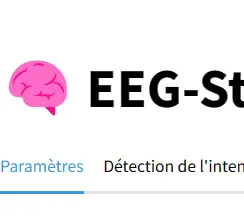
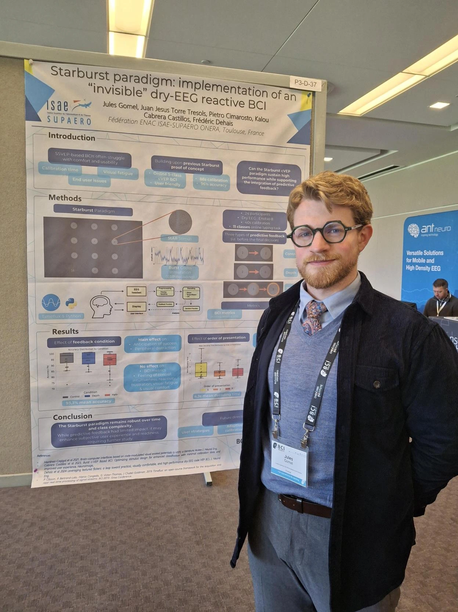

My Research Interests
I apply advanced engineering skills to solve real-world challenges in Neuroengineering. My core focus is on enhancing the reliability and usability of Brain-Computer Interfaces (BCIs) for diagnostic applications, rehabilitation, and human-machine teaming.
By investigating EEG neuromarkers of visual information integration, I aim to bridge the gap between cognitive neuroscience and software engineering. I strongly believe in Open Science, ensuring that my research is supported by robust, reproducible analytical pipelines and standardized datasets.
If you're interested in these topics or looking for technical consulting, let's connect! You can also learn more about our team's ongoing experiments on the lab's website.
My Technical Skills
My technical stack is centered around Python for neuro-data science. I extensively use MNE-Python and the Timeflux framework for real-time EEG signal processing, time-frequency analysis, and BCI implementation. I am also proficient in managing BIDS-compliant datasets to guarantee data reproducibility.
I have a solid background in Machine Learning (classification models, deep learning, GANs) applied to physiological signals, complemented by experience in Matlab for motion tracking and IMUs.
Understanding that a great algorithm is useless without a good interface, I continuously expand my skills in UX/UI design and Object-Oriented Programming (C#) to design engaging experimental paradigms and user-friendly BCI applications.
For a comprehensive view of my technical background, feel free to download my updated Resume or visit my GitHub.
My Current Projects & Software

Ongoing Research: Advanced Visual Paradigms for BCI
Following my initial findings on Gabor flicker, I am currently acquiring and analyzing new EEG data to further investigate visual information processing. This second study aims to push the boundaries of neural entrainment for robust BCI applications.
Open Source: SSVEP Connectivity Toolbox
I am developing a dedicated Python-based toolbox for the analysis of brain connectivity during Steady-State Visual Evoked Potentials (SSVEP). This tool aims to provide researchers with standardized, efficient pipelines for connectivity probing.
View Repository
Scientific Mentoring & Teaching
Beyond the bench, I supervise engineering students on neuro-applied research projects. I also teach practical sessions on EEG signal processing, classification methods, and BCI architecture at ISAE-Supaero.
Recent Publications & Achieved Projects

Textured Gabor Flicker Enhances Neural Entrainment
Demonstrated that low-frequency textured Gabor flicker significantly improves visual comfort and signal-to-noise ratio for SSVEP BCI control. The full analytical pipeline and BIDS dataset are available open-source.
Read the preprint | GitLab
Pre-Decision Feedback in cVEP BCIs (IEEE SMC 2025)
Presented my work in Vienna on how dynamic visual pre-decision feedback impacts both decoding performance and user experience in reactive BCI systems.
Read the article